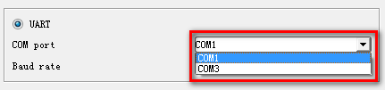
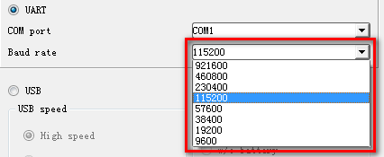
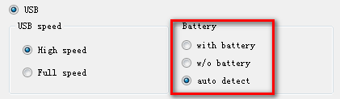
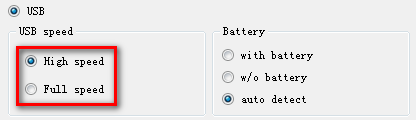
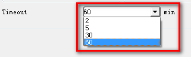

�� Connection Setting
�� Download Method
– UART
Download by UART Cable.
– USB
Download by USB Cable.
�� UART Download
– COM port
The com port searched from the device manager will be show in the com port list.

– Baud rate
Up to now, 9600, 19200, 38400, 57600, 115200, 230400, 460800 and 921600 are available.

�� USB Download
�� Power Supply
– Without Battery
Power Supply is from Battery, battery is not necessary to plug in during operations.
– With Battery
Power Supply is switched to USB VBUS (Battery is not needed under the circumstance).
Re-power on target need to unplug USB cable as well as Battery.
Battery or External Power is required.
– Auto Detect
Power Supply from Battery or USB VBUS is auto detected by DA.
If there is battery on, power supply is from battery; if there is no battery on, power supply is from USB VBUS.

�� Speed Switch
– Force to High Speed
�� BootRom Download Mode
DA is downloaded first into internal ram by BootRom USB port. Tool informs DA to switch to enumerated high speed USB (PID: 2001, VID 0E8D).
Tool auto searches high speed USB port which is enumerated by DA.
DA high speed downloads all images.
�� Preloader Download Mode
DA is downloaded first into internal ram by Preloader USB port.
DA downloads all images by the USB (PID: 2000, VID 0E8D) enumerated by Preloader USB driver.
– Do not switch speed
�� BootRom Download Mode
DA is downloaded first into internal ram via BootRom USB port.
DA downloads all images by the USB (PID: 0003, VID0E8D) enumerated by BootRom USB driver.
�� Preloader Download Mode
DA is downloaded first into internal ram by Preloader USB port.
DA downloads all images by the USB (PID: 2000, VID 0E8D) enumerated by Preloader USB driver.

�� Connection Timeout
SP Flash Tool offers four selections for the connection time limitation: 2 min, 5 min, 30 min and 60 min.
